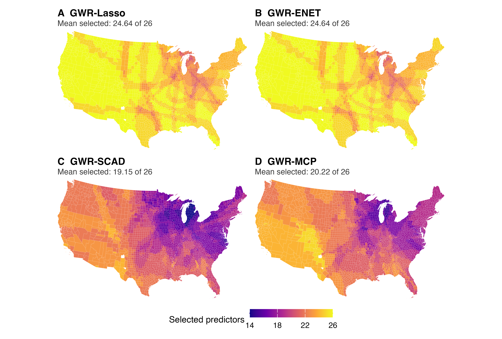

Local variable selection in the county study
Source:vignettes/articles/local-selection.Rmd
local-selection.RmdRegularization can produce different local active sets at different locations. The figure below shows the number of selected predictors in the completed county application, using the study’s recorded selection threshold and tuning procedure.

The analysis contains 26 candidate predictors. Mean local selected counts are 24.64 for GWR-Lasso, 24.64 for GWR-ENET, 19.15 for GWR-SCAD and 20.22 for GWR-MCP. These are descriptive results for this application; lower counts alone do not establish better variable recovery or prediction. Ridge is absent from this selection figure because it does not induce exact coefficient sparsity.
This image is the checked manuscript’s Figure 1, copied without
modification. It is a result of the completed empirical study, rather
than the small software demonstration.
pkgdown/figure-provenance.json records its source filename
and checksum.
Reproduce and interpret
The paper reproduction guide links
to the full application, its inputs, historical package engine,
checkpoint validation and publication renderer. After a complete
validated application run, the documented real-data report
command produces the study report from those results. Consult the
manuscript and supplement for the selection convention, tuning procedure
and empirical interpretation.
The getting-started guide demonstrates all five methods, common spatial folds, coefficient extraction and prediction at new locations with a small deterministic dataset.